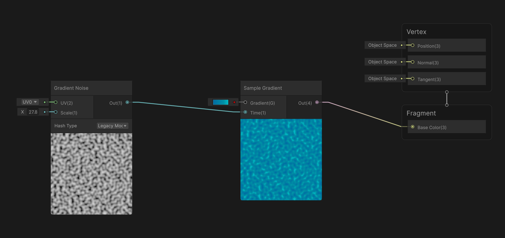
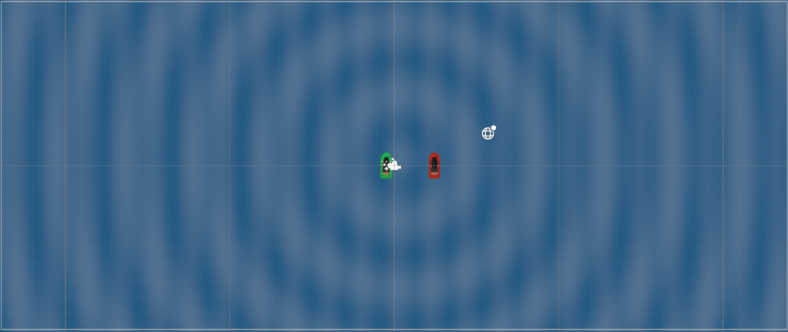

This week, I made two key improvements to my game project. First, I created a visually appealing moving
water background to enhance the game's atmosphere. Second, I Implemented a feature that allows
projectiles to delete themselves after travelling a certain distance./p>
link to my github page for my game: github page
I plan to turn this projectile despawn mechanic into an upgradeable component linked to the card system.
This will allow players to customise the distance of their projectiles mechanic into an upgradeable
component like the card system so the player can improve the range of their projectiles. To anticipate
this, I have decided to allow the player Sprite to control the range of their projectiles. Players one
and two can have different projectile ranges with this mechanic, which can be adjusted alongside other
attributes, such as player speed.
In the second part of this week, I set on improving the aesthetic aspect of my game. What I focused on
this week in the look's design was the water that the players drove the boats on. I knew that I wanted
to have water that looks like it moves, so I knew I wanted to use shaders because I knew these are a
good way to do this, so I created a new shader graph, which is a shader that is managed with nodes using
nodes has pros and cons to it. Still, my incentive to use it over text is because I am not overly
experienced with shaders. With nodes, it is much easier to trial and error. I created a new shader, then
made a gradient going from dark blue to light, hoping it would look better than plain colour, but I
couldn't get it working. While trying to get it working, I dragged a gradient noise into the sample
gradient's time and found that it produced an effect that you often see looking down on the water with
its depth through the water, and the more water in the way, the darker it is. The image below is the
nodes that I used to pull this off.

The texture I initially created didn't fully capture the effect of water; to enhance this, I experimented
with shaders to simulate the swaying or rippling effect of water. My first approach was to warp the
noise texture so that the darker spots would shift around. I faced difficulties with this method. I
discovered I could add a ripple effect, adjusting its opacity to layer it over my original water
texture. For an added challenge, I decided to illustrate this process in written form. Below, you can
see the code I used to create this effect.

Python
Shader "Unlit/WavyWaterRippleOpacity" {
Properties {
_Color ("Color", Color) = (1,1,1,1)
_RippleSpeed ("Ripple Speed", Float) = 2.0
_RippleFrequency ("Ripple Frequency", Float) = 5.0
_RippleAmplitude ("Ripple Amplitude", Float) = 0.1
_WaveStrength ("Wave Strength", Float) = 0.05
_WaveFrequency ("Wave Frequency", Float) = 10.0
_Opacity ("Opacity", Range(0, 1)) = 1.0 // New opacity property
}
SubShader {
Tags { "RenderType"="Transparent" "Queue"="Transparent" } // Important: Set RenderType to Transparent
LOD 100
Pass {
Blend SrcAlpha OneMinusSrcAlpha // Enable alpha blending
CGPROGRAM
#pragma vertex vert
#pragma fragment frag
#include "UnityCG.cginc"
struct appdata {
float4 vertex : POSITION;
float2 uv : TEXCOORD0;
};
struct v2f {
float2 uv : TEXCOORD0;
float4 vertex : SV_POSITION;
float3 worldPos : TEXCOORD1;
};
float4 _Color;
float _RippleSpeed;
float _RippleFrequency;
float _RippleAmplitude;
float _WaveStrength;
float _WaveFrequency;
float _Opacity; // Added opacity variable
v2f vert (appdata v) {
v2f o;
o.vertex = UnityObjectToClipPos(v.vertex);
o.uv = v.uv;
o.worldPos = mul(unity_ObjectToWorld, v.vertex).xyz;
return o;
}
fixed4 frag (v2f i) : SV_Target {
float2 center = float2(0.5, 0.5);
float distance = length(i.worldPos.xy - center);
float rippleValue = sin((distance * _RippleFrequency) + (_Time.y * _RippleSpeed)) * _RippleAmplitude;
float waveOffset = sin(i.worldPos.x * _WaveFrequency + _Time.y * _RippleSpeed * 0.5) * _WaveStrength;
rippleValue += waveOffset;
fixed4 finalColor = _Color + fixed4(rippleValue, rippleValue, rippleValue, 0.0);
finalColor.a = _Opacity; // Apply opacity
return finalColor;
}
ENDCG
}
}
}
How did I stay motivated to improve my game project even when continually facing challenges? What
strategies did I use to maintain my focus and dedication?
This week, maintaining my motivation was particularly challenging due to my busy work schedule, which
left me without my usual weekend to complete my work journal and two work on my game. However, I focused
on setting small, achievable goals each day, which helped me stay committed despite the time
constraints.
How did i pritosise my tasks hen orking on different aspects of my game? What methods did i employ to
ensure that i allocate enough time for both gameplay mechanics and visual design?
With the limited time this week i had to be strateggic about my task pritisation.i focused first on any
gameplay mechanics that need debugging or refining because these are foundational to the player
experience. Once i had made some headway there, i allocated specific chunks of time for visual desfign
breaking down larger tsks into bite sized components this not only ensured progresso n both fronts but
also allowed me to srat orginised and committed without feeling overwhelmed.